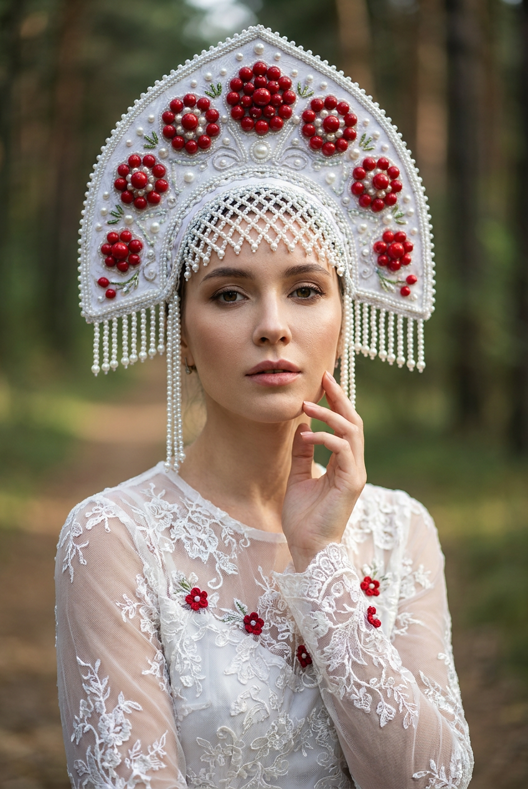
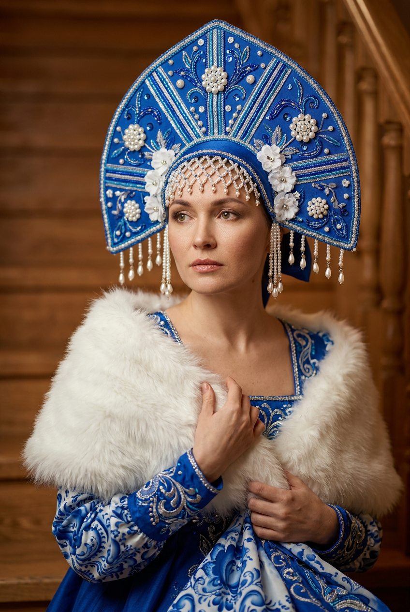
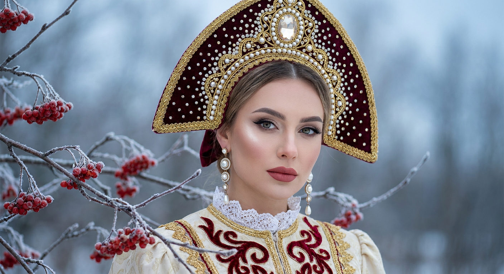
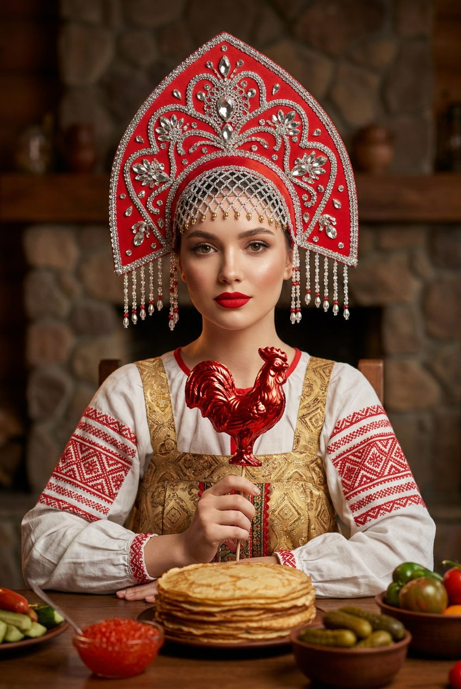
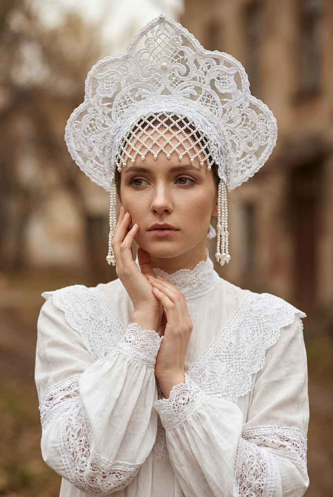
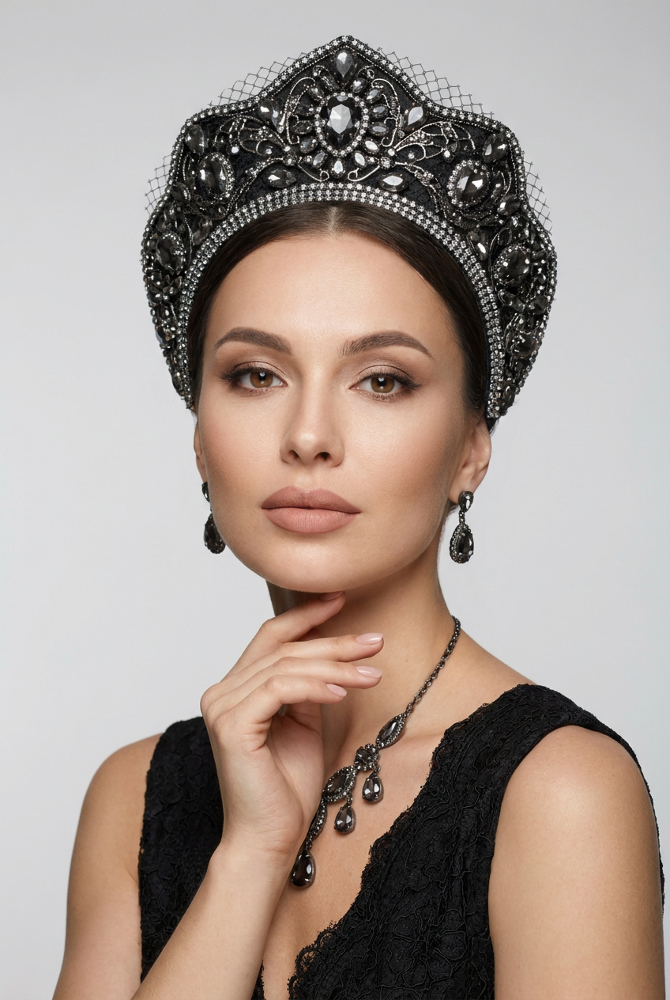
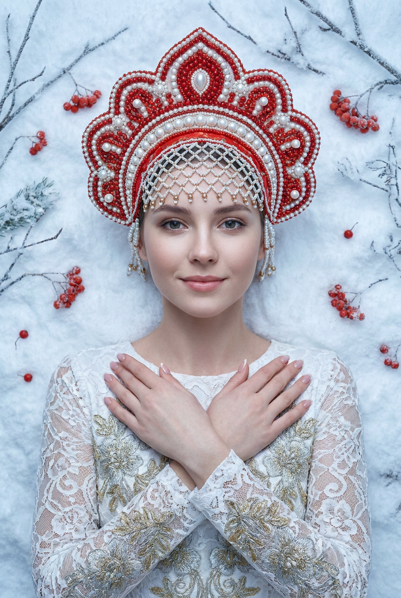
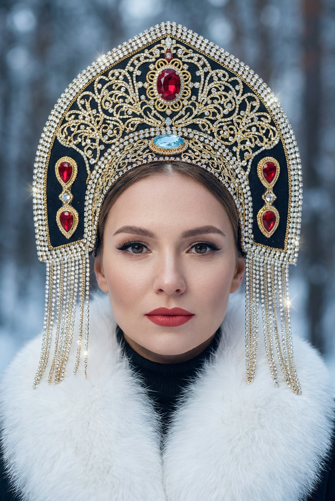
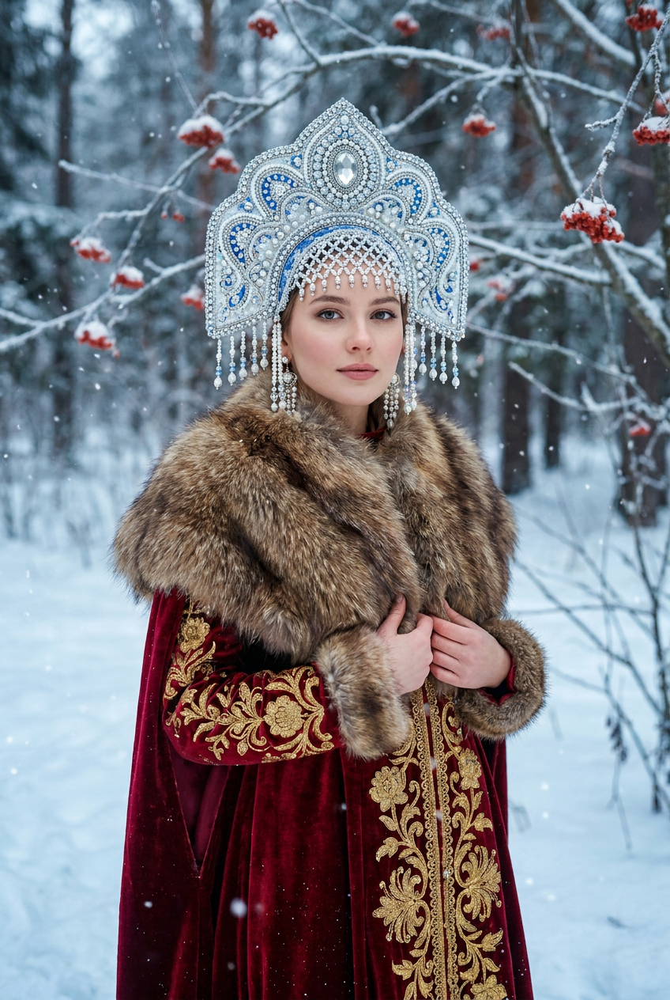
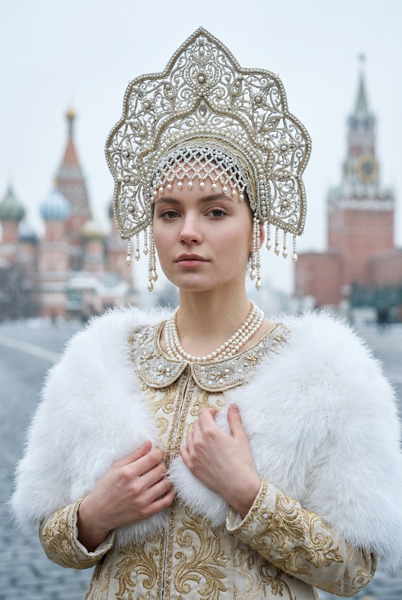

ИИ-фото в кокошнике: 10 промптов для нейросети

Русский образ легко превратить в костюмированную открытку с пластиковой кожей, лишними пальцами и кокошником, который выглядит как случайная корона. Генерация по точному описанию помогает заранее задать позу, макияж, материалы, свет и настроение кадра.
В подборке — 10 сценариев: от портрета у деревянной лестницы и уютной сцены с блинами до зимней съёмки в снегу, драматичного чёрного кокошника и нарядного образа с жемчугом.
Как сгенерировать такое фото: пошагово
Нужен снимок анфас при ровном свете, лицо в кадре целиком, без тёмных очков и головных уборов. Разрешение от 1000 пикселей по короткой стороне. Чем чётче исходник, тем точнее модель повторит черты.
Выберите сценарий ниже и нажмите «Копировать» — текст уйдёт в буфер целиком, вместе с командой сохранения внешности. Эта команда стоит первой строкой и отвечает за то, чтобы на выходе было ваше лицо, а не случайное.
Кнопка «Сгенерировать» рядом с каждым промптом открывает модель в новой вкладке. Nano Banana Pro работает с референсом лица — в отличие от моделей, которые генерируют портрет с нуля и узнаваемость теряют.
Промпт — в поле ввода, портрет — через загрузку референса. Порядок значения не имеет, но без референса команда сохранения внешности работать не будет: модели нечего сохранять.
Для сторис и ленты берите 9:16, для превью и обложек — 4:3. Первый результат редко идеален: если поза или свет ушли не туда, поправьте соответствующую часть промпта и запустите заново. Обычно хватает двух-трёх итераций.
10 промптов для генерации
1. Белый кокошник на улице
Строго сохранить внешность по загруженному референсу: черты лица, пропорции, мимику и текстуру кожи без изменений. Фотореалистичный вертикальный портрет девушки на улице в традиционном русском образе, кадр по пояс или по грудь. Использовать лицо с загруженного референса: сохранить индивидуальные черты, форму глаз, бровей, носа, губ, овал, естественную мимику и пропорции. Корпус слегка развёрнут, выражение спокойное и уверенное, взгляд прямо в объектив. Одна рука поднята к лицу: палец мягко касается подбородка или щеки, кисть и пальцы анатомически естественные. Кожа ровная, с живой текстурой; подчёркнутые брови, нейтральные тени, выразительные ресницы, аккуратная подводка, лёгкий румянец. Губы матовые или сатиновые, ярко-алые, с чётким контуром. Главный акцент — высокий молочно-белый куполообразный кокошник, богато украшенный вышивкой, жемчугом, блёстками и тонкой декоративной отделкой. Мягкий дневной свет, натуральные цвета, высокая детализация.
2. Кобальтовый кокошник у лестницы

Строго сохранить внешность по загруженному референсу: черты лица, пропорции, мимику и текстуру кожи без изменений. Кинематографичный фотореалистичный крупный портрет девушки в русском кокошнике, снятый у деревянной лестницы. Вертикальный кадр выстроен по диагонали; девушка сидит или стоит, повернувшись к зрителю в 3/4, взгляд уходит в сторону, выражение лица спокойное. Лицо взять с загруженного референса без изменения индивидуальных особенностей: те же глаза, брови, нос, губы, овал, мимика и пропорции. Макияж аккуратный, кожа ровная и естественная, без эффекта фарфоровой маски. Кокошник высокий, куполообразный, насыщенного кобальтово-синего цвета. Вся поверхность покрыта стеклярусом, вышивкой, блёстками и бисером; добавлены россыпи маленьких белых жемчужин, узоры из тонких голубых и серебристых линий. Белые или молочные цветочные вставки выступают над поверхностью, по бокам свисают жемчужные подвески, вниз идут синие и жемчужные декоративные элементы. Мягкий направленный свет, малая глубина резкости, дорогая фактура ткани и украшений.
3. Бордовый образ в снегу

Строго сохранить внешность по загруженному референсу: черты лица, пропорции, мимику и текстуру кожи без изменений. Фотореалистичный портрет девушки на зимней улице, крупный план от головы до груди. Голова слегка наклонена, взгляд направлен в камеру, эмоция спокойная и уверенная. Внешность основана на загруженном референсе: точно передать форму глаз, бровей, носа, губ, овал лица, естественную мимику и пропорции. Кожа ухоженная, с натуральной текстурой. Макияж с выразительными бровями, аккуратными стрелками, густыми ресницами, холодными нейтральными тенями, мягким хайлайтом на скулах; губы нюдово-розовые или приглушённо-красные, матовые либо сатиновые. Часть волос спрятана под головным убором. На голове высокий кокошник треугольной, арочной формы, с бордовой или тёмно-красной основой. По краю проходит золотая окантовка, верх и контур усыпаны мелкими кристаллами. В центре расположен крупный овальный камень в сияющей оправе. Холодный рассеянный зимний свет, снежный фон, реалистичные детали.
4. Кокошник и блины у камина

Строго сохранить внешность по загруженному референсу: черты лица, пропорции, мимику и текстуру кожи без изменений. Вертикальный фотореалистичный lifestyle-портрет девушки в русском образе в тёплом домашнем интерьере с камином. Кадр по пояс: девушка сидит за столом, держит спину прямо и немного повёрнута к камере, взгляд обращён в объектив, руки находятся на переднем плане. Лицо — по загруженному референсу, с сохранением индивидуальных черт, формы глаз, бровей, носа, губ, овала, мимики и пропорций. Кожа с естественной текстурой и ровным тоном, аккуратный макияж, выразительные брови, мягко подчёркнутые глаза, естественные губы. На столе лежит стопка румяных золотистых блинов с поджаренной корочкой. Рядом стоят небольшие миски с красной икрой и соленьями или корнишонами; овощи и закуски разложены аккуратно, без визуального хаоса. Традиционный кокошник светлый, богато отделанный, гармонирует с нарядом. Уютный огонь камина, тёплое боке, мягкие домашние тени, натуральная цветопередача, высокая детализация еды и тканей.
5. Кружевной кокошник на прогулке

Строго сохранить внешность по загруженному референсу: черты лица, пропорции, мимику и текстуру кожи без изменений. Фотореалистичный вертикальный портрет девушки на улице в мягкой сказочной атмосфере, кадр по грудь с акцентом на лицо и руки. Корпус развёрнут немного в сторону, взгляд направлен не в объектив, выражение задумчивое и спокойное. Использовать лицо с загруженного референса, сохранив форму глаз, бровей, носа, губ, овал лица, естественную мимику и пропорции. Одна рука согнута, палец касается щеки; вторая будто поддерживает локоть первой. Пальцы тонкие, ухоженные, с естественной анатомией. Главный головной убор — белый или молочный куполообразный кокошник из тонкого кружева с цветочными узорами. По краю проходит объёмная кружевная окантовка, на передней части видна ажурная сетка-решётка из кружевных элементов; добавьте деликатный декор без перегруженности. Макияж аккуратный, кожа живая и ровная, волосы частично убраны под кокошник. Мягкий рассеянный свет, лёгкое свечение фона, реалистичная фактура кружева.
6. Чёрный кокошник вечером

Строго сохранить внешность по загруженному референсу: черты лица, пропорции, мимику и текстуру кожи без изменений. Студийный фотореалистичный портрет девушки в драматичном вечернем русском образе, вертикальная композиция, кадр по плечи и частично по грудь. Девушка слегка повёрнута к камере, смотрит прямо в объектив, выражение лица уверенное и спокойное. Одна ухоженная рука поднята к шее: кончики пальцев касаются области подбородка или шеи, кисть выглядит анатомически правдоподобно. Внешность взять с загруженного референса, не менять черты лица, глаза, брови, нос, губы, овал, мимику и пропорции. Кожа с естественной текстурой, ровный тон, мягкий контуринг. Макияж: выразительные брови, нейтрально-коричневые тени с акцентом в складке века, стрелки, длинные ресницы, ровный хайлайт на скулах. Губы матовые нюдово-розовые или розово-бежевые, контур чёткий. Высокий чёрный кокошник — главный акцент образа, с глубокой фактурой, декоративной вышивкой, блеском камней и чётким силуэтом. Драматичный вечерний свет, глубокий фон, кинематографичный контраст.
7. Портрет на снегу

Строго сохранить внешность по загруженному референсу: черты лица, пропорции, мимику и текстуру кожи без изменений. Студийно-кинематографичный вертикальный портрет девушки в русском зимнем стиле, кадр по грудь. Девушка лежит на снегу строго по центру композиции и смотрит прямо в камеру. Обе руки подняты к груди, кисти сложены или слегка переплетены; пальцы аккуратные, ногти ухоженные, анатомия реалистичная. На лице тихая естественная улыбка или нейтральное спокойное выражение. Лицо соответствует загруженному референсу: сохранить индивидуальные черты, глаза, брови, нос, губы, овал, мимику и пропорции. Кожа ровная, без пересвета, с тонким контурингом. Брови чёткой формы, выразительные ресницы, аккуратная подводка, губы приглушённо-розовые или мягко-красные, матовые либо сатиновые. Волосы почти полностью убраны под головной убор. Высокий зимний кокошник украшен светлой меховой и декоративной отделкой, гармонирует со снежной сценой. Холодный мягкий свет, чистый снег, центрированная композиция, реалистичная фактура ткани и кожи.
8. Величественный алый портрет

Строго сохранить внешность по загруженному референсу: черты лица, пропорции, мимику и текстуру кожи без изменений. Фотореалистичный студийно-кинематографичный крупный план девушки в традиционном русском кокошнике. Лицо занимает почти весь вертикальный кадр, верхушка головного убора полностью видна. Девушка смотрит прямо в объектив; выражение спокойное, собранное и величественное. Лицо взять с загруженного референса и сохранить без изменений индивидуальные черты, форму глаз, бровей, носа, губ, овал лица, мимику и пропорции. Мягкий равномерный свет без резких теней и провалов, фон сильно размыт, заметно деликатное боке. Кожа с естественной текстурой, ровный тон, аккуратный контуринг, лёгкий румянец. Глаза подчёркнуты стрелками и длинными ресницами, брови ухоженные. Губы насыщенно-красные или алые, матовые, с чётким контуром и без блёсток. Кокошник очень высокий, куполообразный, с тёмной основой, густо украшенный вышивкой, бисером, кристаллами, жемчугом и металлическими деталями. Дорогой нарядный вид, точная передача блеска материалов.
9. Серебряная корона в лесу

Строго сохранить внешность по загруженному референсу: черты лица, пропорции, мимику и текстуру кожи без изменений. Киношное фотореалистичное изображение девушки в русском зимнем наряде на улице, среди заснеженного леса. Вертикальная композиция, полный рост, девушка стоит по центру и слегка разворачивает корпус. Взгляд направлен в камеру, выражение лица спокойное и уверенное. Руки согнуты внизу у талии; девушка держит или подтягивает мягкую пушистую меховую накидку или воротник. Внешность — по загруженному референсу, с точным сохранением глаз, бровей, носа, губ, овала, естественной мимики и пропорций. На голове высокая корона-кокошник куполообразной формы в серебристо-бело-голубой гамме. В центре — изящный мотив и крупный камень овальной или каплевидной формы в оправе; вся поверхность усыпана мелкими кристаллами, стразами и бусинами, по периметру проходит декоративная кайма. Добавьте сияющую сетку, цветочные или мандельные узоры. Снежные ели на фоне, холодный кинематографичный свет, лёгкая дымка, реалистичная меховая фактура.
10. Жемчужный образ с накидкой

Строго сохранить внешность по загруженному референсу: черты лица, пропорции, мимику и текстуру кожи без изменений. Фотореалистичный вертикальный портрет девушки в русском кокошнике, кадр по грудь, положение корпуса в 3/4, взгляд прямо в объектив. Выражение лица нейтральное и спокойное, черты естественные. Лицо использовать с загруженного референса, сохранив форму глаз, бровей, носа, губ, овал лица, мимику и пропорции. Кожа ровная, с натуральной текстурой, макияж аккуратный и неброский. Кокошник высокий, куполообразный, серебристо-золотистый, украшенный тонкой филигранью, множеством белых жемчужин, мелкими камнями и кристаллами. По нижнему краю свисают изящные подвески с жемчужными каплями. На девушке богато вышитое платье светлого бежево-молочного оттенка с золотыми орнаментами и барочными узорами; видны декоративный воротник и отделка на груди. Поверх лежит белая пушистая накидка из перьев или плотного мягкого материала, создающая объём вокруг плеч. Мягкий студийный свет, высокая детализация филиграни, жемчуга, вышивки и ворса, дорогая журнальная стилистика.
Что важно учесть в этом стиле
Кокошник должен быть главным визуальным объектом, поэтому его форму, цвет и материалы лучше описывать отдельно от платья. Для реалистичного результата указывайте не только «богатый декор», но и конкретные элементы: жемчужные капли, стеклярус, филигрань, кристаллы, кружево или золотую окантовку.
Русский образ держится на контрастах: холодный снег и бордовый бархат, белый мех и кобальтовая основа, тёплый камин и золотая вышивка. Не перегружайте сцену десятком акцентов. Один главный материал, понятная поза и мягкий свет обычно выглядят убедительнее случайного набора украшений.
Идеи для вариаций
- Замените зимний лес на заснеженную ярмарку с деревянными лавками.
- Добавьте расписные сани, самовар или связку баранок в дальний план.
- Попросите кокошник в цветах северного сияния: изумрудном, бирюзовом и фиолетовом.
- Сделайте сцену в стилистике царской фотосессии с тёмным бархатным фоном.
- Поменяйте блины на пирог, пряники или чашку чая в расписном фарфоре.
- Для fashion-версии добавьте жёсткий боковой свет, длинные серьги и гладкий фон.
Как собрать свой промпт
Начните с технической базы: фотореализм, вертикальный формат, крупность плана и положение тела. Затем зафиксируйте работу с референсом: какие черты нельзя менять и куда направлен взгляд. После этого опишите кокошник — его силуэт, основу, орнамент и свисающие детали.
В финале добавьте одежду, реквизит, локацию и свет. Если изображение нужно для публикации, укажите соотношение сторон 4:5 или 9:16, разрешение от 2048 пикселей по длинной стороне и попросите убрать лишние пальцы, пластиковую кожу, текстовые артефакты и водяные знаки. Сделайте 4–6 генераций, меняя за раз только один параметр.
Ошибки, из-за которых кадр не получается
- Слишком общий кокошник. Слова «красивый» и «богатый» не объясняют нейросети, где нужны жемчужины, вышивка и подвески.
- Противоречивая поза. Если одна рука касается щеки, а другая поддерживает локоть, опишите положение каждой кисти отдельно.
- Смешение планов. Полный рост и крупный портрет требуют разных композиций — выберите один вариант.
- Нереалистичные руки. Добавьте ухоженные пальцы, естественную анатомию и попросите не дублировать конечности.
- Слишком сильный бьюти-эффект. Уточняйте естественную текстуру кожи, отсутствие пересвета и умеренный макияж.
- Потеря лица на референсе. Не меняйте одновременно позу, возраст, причёску и выражение; сначала добейтесь узнаваемости, потом усиливайте декор.
Частые вопросы
Как сделать такое ИИ-фото бесплатно?
Попробуйте Kandinsky и Шедеврум: они подходят для генерации по текстовому описанию, но точное сохранение лица по референсу может быть ограничено. В Krea AI и Arena.ai обычно есть бесплатные попытки или лимиты, однако доступность функций меняется. Для узнаваемого результата загружайте чёткий портрет без очков и сильных теней, а не рассчитывайте на полное совпадение с первого раза.
Как сохранить сходство с человеком на фото?
Используйте один хорошо освещённый референс анфас или в лёгком 3/4. В промпте отдельно зафиксируйте форму глаз, носа, губ, овал лица и естественную мимику. Не меняйте сразу возраст, ракурс и выражение. Если сервис поддерживает силу изображения-референса, начните со среднего значения и сделайте несколько вариантов.
Какой формат выбрать для публикации?
Для поста подойдёт вертикаль 4:5, для сторис и коротких видео — 9:16. Попросите оставить небольшой запас над кокошником и по бокам, чтобы украшения не обрезались. Сначала генерируйте композицию, а затем увеличивайте разрешение отдельным инструментом.
Почему кокошник выглядит пластмассовым?
Нейросеть часто упрощает мелкий декор и смешивает материалы. Укажите конкретную фактуру: матовый бархат, тонкое кружево, стеклярус, вышитая нить, натуральный жемчуг, металлическая филигрань. Добавьте мягкий боковой свет и макросъёмочную детализацию, но не просите одновременно десятки разных украшений.